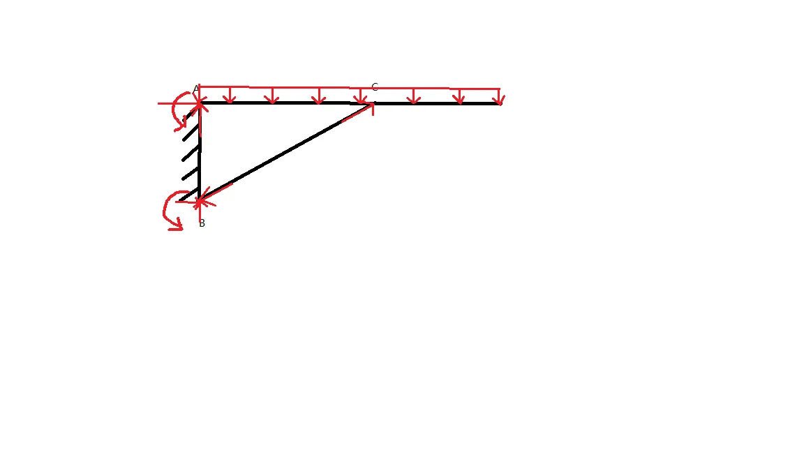
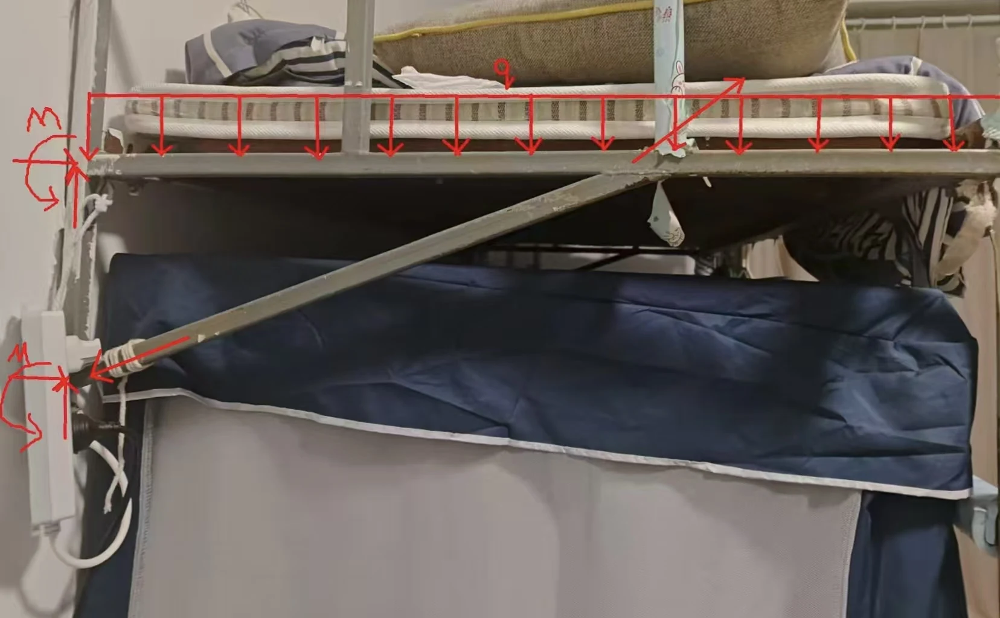

大连交通大学 · 智能建造23
我的原作宿舍双层床支撑结构的力学分析与设计原理解读
王俊博
一、力学问题表达
1. 问题意义
宿舍双层床的支撑结构是保障床体承载能力与稳定性的核心，其力学性能直接关系到使用安全。上层床体的荷载通过支撑构件传递到床架立柱与地面，若支撑结构的强度、刚度不足，会出现弯曲变形、扭转变形甚至断裂失效的情况，因此对该支撑结构进行力学分析，是结构设计与安全评估的关键环节。
2. 影响因素
- 荷载因素：上层床面的人员体重、床垫/被褥等物品重量属于静荷载，人员翻身、上下床的冲击力属于动荷载，荷载的大小与分布直接影响支撑构件的受力状态。
- 构件参数：支撑斜杆与横杆的截面尺寸（如钢管直径、壁厚）、材料性能（如钢材的屈服强度、弹性模量）决定了构件的承载能力。
- 连接方式：支撑构件与床架主框架的连接节点（焊接、螺栓连接、绑扎加固等）的可靠性，会影响力的传递效率，节点松动或失效会改变构件的受力模式。
- 结构几何形态：支撑斜杆的倾斜角度、横杆的跨度，会影响构件的内力分布（如弯矩、剪力、轴力的大小）。
3. 力学趋势
当上层床面承受竖向荷载时，支撑斜杆主要承受轴向压力（受压构件），床架的水平横杆与竖向立柱主要承受弯矩与剪力（受弯剪构件），部分连接节点还会承受扭矩。随着荷载增大，受压斜杆可能出现失稳变形，受弯构件会产生弯曲变形，当应力超过材料的屈服强度时，构件会发生塑性变形甚至破坏。
4. 力学图示
（1）简化力学模型
将双层床上层床面的支撑结构简化为简支梁+斜向支撑杆的组合体系，上层床面的荷载等效为均布荷载q作用在床面框架上，支撑斜杆与床架横杆的连接点为铰支节点，床架立柱与地面的连接为固定支座。
（2）受力图
二、生活中体现
1. 照片标注
- 受力标注：上层床面区域标注竖向均布荷载；斜向支撑钢管处标注压力；水平横杆与立柱连接点标注弯矩；床架立柱与墙面/地面连接点标注固定支座反力。
2. 配文说明
从照片中能观察到，该双层床的上层床体采用斜向钢管+水平钢管的组合支撑形式，这是典型的“桁架式”支撑设计思路。斜杆的设置替代了单纯的竖向支撑，将竖向荷载转化为斜杆的轴向力与横杆的弯剪力，利用钢材的抗压性能优化了受力状态。
照片中可见支撑斜杆与主框架的连接部位钉子加固，措施通过增加固定约束节点的转动与位移，提升了连接的刚度，减少了节点变形对整体结构的影响。同时，上层床的护栏与床架的连接采用多根竖向短杆加固，避免护栏因受扭或横向荷载发生弯折，体现了“抗扭构件需增加约束节点”的设计思路。
此外，床架的钢管表面有磨损与锈蚀，材料的截面有效面积减小，会降低构件的承载能力，这也是实际使用中需要关注的力学性能衰减因素。
三、对照《结构设计原理》内容
1. 受弯构件的设计原理应用
《结构设计原理》中指出，受弯构件（如梁）的设计需控制弯矩作用下的正截面受弯承载力与斜截面受剪承载力。本床的水平横杆属于受弯构件，其截面为圆形钢管，钢材的受拉、受压性能均衡，符合“受弯构件应选择塑性好、强度高的材料”的原则。
若将横杆替换为钢筋混凝土梁，需按照钢筋混凝土受弯构件的设计要求配置纵向受力钢筋（抵抗受拉区拉力）与箍筋（抵抗斜截面剪力），而钢管横杆则利用钢材的整体受力，无需额外配置钢筋，体现了不同材料受弯构件的设计差异。
2. 受压构件的稳定设计
斜向支撑钢管属于轴心受压构件，《结构设计原理》中强调轴心受压构件需验算整体稳定与局部稳定。该钢管的长细比（计算长度与回转半径的比值）决定了其稳定系数，长细比越大，构件越易发生失稳变形。照片中斜杆的长度较短、截面刚度较大，降低了失稳风险，符合“受压构件应减小计算长度、增大截面惯性矩”的设计要求。
3. 节点连接的设计理念
结构节点的设计需保证力的有效传递，本床的支撑构件与主框架的焊接节点，属于“刚接”或“铰接”的混合节点。《结构设计原理》中要求节点的强度不应低于构件的强度，照片中采用加固节点的方式，通过增加节点的约束度，减少了节点的相对位移，弥补了原节点的刚度不足，可视为生活中对“节点加固”理念的简易应用。


这是一份便于网页阅读的原作视图，保留提交内容的文字、图片和基本顺序；公开页面不显示学号。